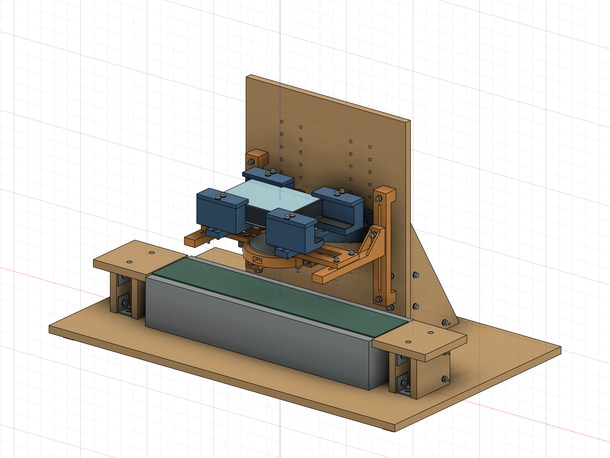
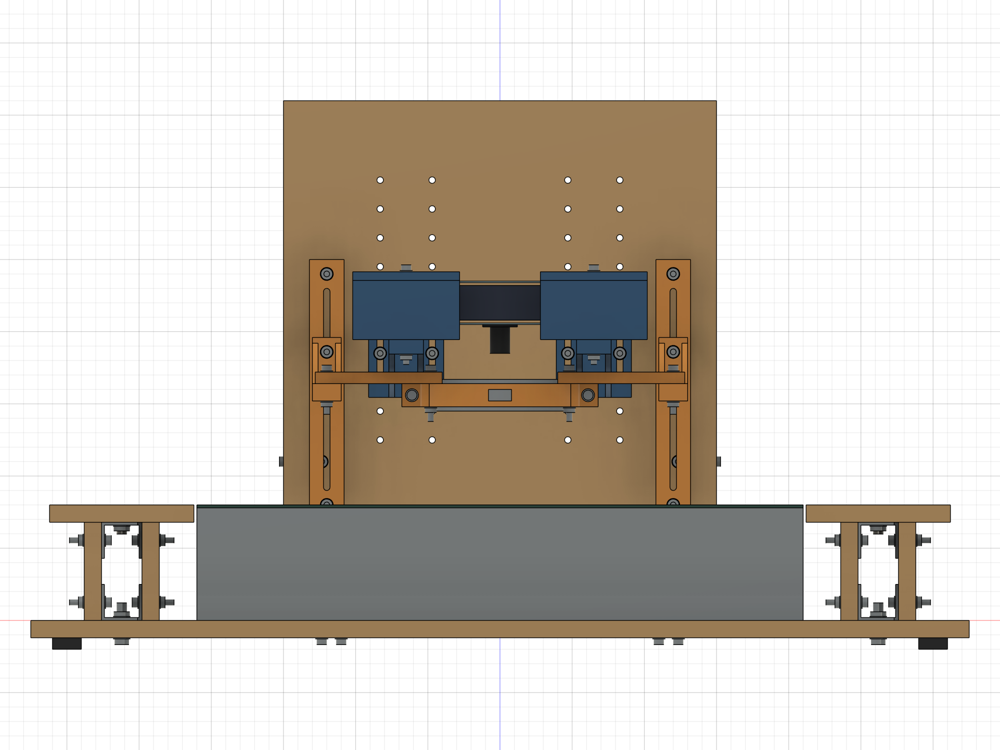
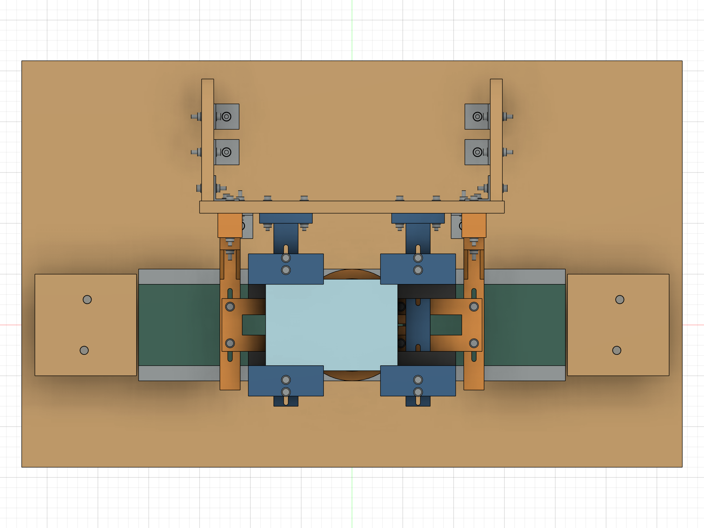
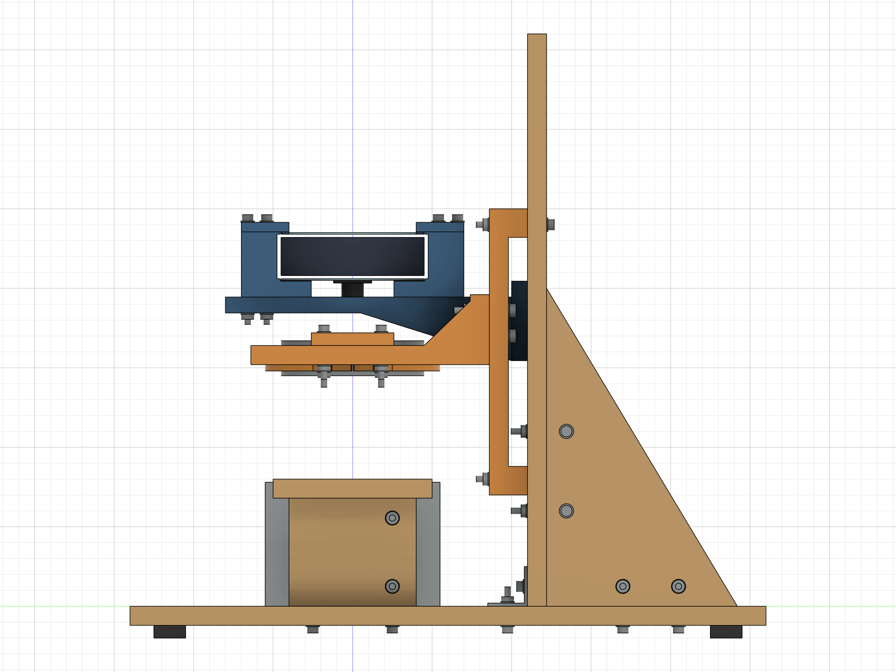

试制方案，2026-09-10。仅供布局确认；未完成实物试配、承载、温升或光学验证。R1 保留。
本目录包含 Fusion 原生参数化装配、整机 STEP 和四幅整体视图。自制零件使用草图、尺寸约束、拉伸、切除和少量放样特征；标准紧固件采用简化包络，未画螺纹。不是渲染图替代 CAD。整机当前包络为 650×400×380 mm（含底部 8 mm 防滑垫）。正视由前方 −Y 看向后方，俯视从 +Z 向下，右视从 +X 看向左侧。当前设计有 55 个用户参数、1244 项特征历史、348 个完全约束草图、324 个装配实体。重复件共享组件定义；P03 四个方位及 P07 左右件分开编号。
FPGA_Inspector_R2_Prototype.f3d：用 Fusion 打开，可旋转、隐藏组件、查看时间线、修改用户参数。FPGA_Inspector_R2_Assembly.step：整机实体交换文件；不含 Fusion 参数历史。整体视图/R2_Isometric.png、R2_Front.png、R2_Top.png、R2_Right.png：原生 CAD 正交投影截图，2000×1500；不是制造工程图。参数表_R2.csv：用户参数与表达式；evidence/：检查数据；scripts/：建模和检查脚本及修正记录。evidence/R2_working_checkpoint.f3d 是中途恢复用检查点，不是最终审查版本。应打开文件名含 Prototype 的文件。



| 项目 | R2 实施结果与原因 |
|---|---|
| 木结构 | 底板 650×400×12；立板 300×360×12；两块 120×200×12 直角加强板。底板上面 Z=0，检测中心 X=Y=0，X 沿输送方向，Y 向后。立板前面 Y=110。 |
| 相机对中 | 托臂始终 X=±65。板卡中心 X=−20，镜头偏心 +20，镜头轴线仍为 X=Y=0；未增加左右滑台。 |
| 四点承托 | P02 由 64 加宽为 74，接触深度改为 19。软垫厚 0.5 为假设，螺栓位于接触区以外。 |
| 正向限位 | P02 集成上下亚克力 Y 止挡、板外硬支脚；P03 下伸 X 止挡并在上亚克力上方留 0.5 间隙。压紧力经板外支脚传递。四角止挡交界原有 3 mm³ 重叠已消除。 |
| 相机高度 | 根部加宽 52，双侧根部螺栓中心在加强筋之外；分档 20，微调槽总长 28、宽 4.5。上下档衔接。 |
| 灯架 | P04 平板、两端垫高脚、12 深开放背通道；P05 双螺栓连接，无复杂滑块。P05 筋前端由 Y=28 后退到 Y=45，给连接板前后运动让位。 |
| 木连接干涉 | 加强板与立板的上连接点由 Z=140 降到 Z=110，避免与低位灯架螺栓相碰；下连接点 Z=60。未增加零件。 |
| 灯圈 | P06A/B 分体外夹，通光孔保留；P07 合并为左右各一件。夹耳、直通线口/散热窗及闭合止挡保持简单。没有使用安装面未知的四个 M3 孔。 |
| 灯的操作 | 灯架高度连接采用 M4 外六角头，开放背通道侧向持 7 mm 扳手，正面紧固。夹圈螺钉从前方操作。 |
| 水平进出料 | 两端各 100×100×12 托板，距机身端面 2 mm；四片 12 厚木脚暂高 68。托板顶面与暂定带面同为 Z=80。顶面改为 M4×20 沉头螺钉，头低于板面 0.2，防止载带撞螺钉头。 |
| 固定 | 普通 25×25×25、厚 2 角码包络；实购孔位待核。只建结构连接孔，设备安装孔未臆造。底部 8 厚防滑垫让出螺钉头。 |
图示颜色仅区分木板、打印件、设备与标准件，不表示已赋予可信的材料强度数据。
| 未知项目 | 本版布局值 | 状态 |
|---|---|---|
| 下/上亚克力厚度 | 各 1 mm | 假设，待测 |
| 承托面至组件顶部 | 30 mm | 假设；不代表实际板卡总厚度 |
| 镜头端面低于承托面 | 20 mm | 假设；镜头自身 Ø14×18.3 单独定义 |
| 实际带面高 | 80 mm | 假设；已知 80 是设备外形高度，不能作为实测带面高度 |
| 检测物高出带面 | 5 mm | 假设 |
| 拍摄距离 D | 100 mm | 从镜头端面到检测面；未做合焦验证 |
| 灯发光面距检测面 H | 60 mm | 假设 |
| X/Y 总定位间隙 | 各 1 mm | 初始设计值，需要试配，不能当成打印精度 |
| 灯圈衬垫 | 径向 0.5 mm | 假设材料与厚度；可更换，须轻压试配 |
原生文件重新导入 Fusion 后，55 个参数、1244 项历史、342 个组件实例/子装配实例保留；STEP 经独立 OpenCascade 读取为 324 个有效实体，整形有效。evidence/native_reopen.json、step_roundtrip.json 保存证据。
默认检测面 Z=85，镜头端面 Z=185，承托面 Z=205，上亚克力顶 Z=235，防脱片下表面 Z=235.5，灯下表面 Z=145。板卡中心为 (−20,0)，镜头、灯和检测点均为 (0,0)。
修改 camera_wd 后，另将 camera_row_z 选到就近的 125、145…305 分档孔；该参数表示人工拆装换档，不是自动升降机构。建议令 abs(camera_row_z-(support_z-soft_t-pad_t-10 mm)) ≤ 10.75 mm。两边选择同档。
修改板厚、偏心、带高后必须复核紧固件长度、工具与灯距。原生重算成功不等于新参数组合可以制造。设备和载带轮廓仍是包络，不做未知尺寸的贴合导向。
下亚克力、实体承托面、实际软垫的默认交集：
| 接触点 | X 交集/mm | Y 交集/mm | 名义接触 | 各轴扣减 5 后的完整矩形 |
|---|---|---|---|---|
| 左前 | −85…−28 | −45…−26 | 57×19 | 52×14 |
| 左后 | −85…−28 | 26…45 | 57×19 | 52×14 |
| 右前 | 28…45 | −45…−26 | 17×19 | 12×14 |
| 右后 | 28…45 | 26…45 | 17×19 | 12×14 |
孔槽位于 Y=±54、±66，未侵入上述接触区；接触面没有扣除后还占用面积的倒角或缺口。5 mm 保守扣减分别为板边内缩 0.5、定位位置变化 1、托臂安装 1、打印尺寸综合 1、软垫内缩及贴放 1.5。此为预算，不是实测制造精度。四点各满足至少 12×14=168 mm² 的目标；不能据此证明 1 mm 亚克力挠曲或承载合格。
右侧约束为 board_l/2-lens_dx-(65-pad_w/2)-5 ≥ 12。默认恰为 12；若偏心改为 22，结果降为 10，不满足，须改承托宽度或重新布置，不能默默沿用结论。偏心 18 的回归值为 14。
四个平面极限角：板卡 X、Y 各平移 ±0.5。最大抬起 0.5 时，X 止挡与上亚克力仍有 1 mm 竖向重叠，Y 下止挡仍有 0.5 mm；上止挡仍有 1 mm。X 止挡沿 Y 的最小接触长度 4.5 mm。垂直放入板卡，再装四片 P03，避免封闭夹口。上方间隙负责防抬，X/Y 硬止挡负责防滑，不以软垫摩擦代替定位。
配合风险：1 mm 总间隙不能覆盖任意方向的 1 mm 打印偏差再加板卡尺寸正偏差。上述承托面积预算不是“必定装得进去”的公差证明。须先做止挡小样/测量，调整 lateral_gap，保证可垂直放入且不挤弯亚克力；间隙变大后重新扣减承托宽度。
统一采用 槽总长−4.5−双螺栓中心距−2×1，以校核直径而不是理想螺杆直径计算。
| 调节项 | 槽本身 | 装配限制/本版使用范围 |
|---|---|---|
| 相机短槽 | 28−4.5−0−2=21.5 mm | 分档 20，相邻档重叠 1.5；125…305 孔档理论 D=29.75…231.25，但未将其宣称为整机可用距离 |
| 灯高双螺栓 | 140−4.5−16−2=117.5 mm | 槽中心约束灯底 68.25…185.75；需再扣掉传送带、固定螺栓和背部操作空间。取 H=10…97 mm，连续有效 87 mm |
| 灯前后双螺栓 | 72−4.5−36−2=29.5 mm | 机械位置 Y=−14.75…+14.75；同轴检测仍要求 Y=0。默认 D100/H60 时建议 Y≤+10，给相机筋留约 2 mm 以上间隙 |
本版采用保守组合区间：D=50…200、H=10…97，且 D≥H+38，灯 Y=0。例如 D50/H10、D100/H60、D135/H97。不是 D、H 可以在各自范围内任意搭配。若需要完整前后行程并保留约 2 mm 几何余量，采用 D≥H+42；例如 D102/H60。
D40/H10 已检出相机筋与 P07 相交，故不承诺 40 mm。上端 H100 会遇到固定/支承结构，故使用上限 97。薄料人工取放更适合 H≥30、D≥H+38；低灯位先升灯再取放，不把 10 mm 下方空间当成人手空间。光学能否合焦、灯照是否均匀另行验证。
检查方法：从原生实体复制临时 BRep，按真实部件分组平移，分档螺栓移至对应孔排；AABB 筛选后做精确布尔相交。检查 640 个组合，其中 435 个未发生体积相交。其余包含刻意测试的冲突组合，不能将“全部组合通过”作为结论。临界附近另有细分检查 pose_refined.json。这是离散扫查加约束计算，不是全连续运动或碰撞求解器证明。
geometry_check.json。parameter_regression_results.json。堆叠高改到 35 时应把承托 M4×65 改选 M4×70；现有螺栓不能直接沿用。带面改为 75 时，当前实心机身简化包络会与带面包络重叠，必须按实物重建机身上部，不能宣称该变体无干涉。lens_dy 本版只校核 0；改变它会改变 Y 限位配合，需重新布置止挡。| 打印件 | 数量 | 装配坐标包络 X×Y×Z/mm |
|---|---|---|
| P01_对称托臂 | 2 | 52.0 × 190.0 × 50.0 |
| P02_加宽四点承托块 | 4 | 74.0 × 44.0 × 41.0 |
| P03_LF_上防脱及X止挡 | 1 | 74.0 × 30.0 × 7.5 |
| P03_LB_上防脱及X止挡 | 1 | 74.0 × 30.0 × 7.5 |
| P03_RF_上防脱及X止挡 | 1 | 74.0 × 30.0 × 7.5 |
| P03_RB_上防脱及X止挡 | 1 | 74.0 × 30.0 × 7.5 |
| P04_开放背槽竖导板 | 2 | 24.0 × 24.0 × 180.0 |
| P05_双螺栓灯托臂 | 2 | 20.0 × 150.0 × 44.0 |
| P06B_分体灯夹圈 | 1 | 136.0 × 54.5 × 16.0 |
| P06A_分体灯夹圈 | 1 | 136.0 × 54.5 × 16.0 |
| P07_L_灯圈连接板 | 1 | 88.0 × 52.0 × 8.0 |
| P07_R_灯圈连接板 | 1 | 88.0 × 52.0 × 8.0 |
P01 侧放，约 190×50 的投影加四周 5 mm 附着边为 200×60，已到 200 mm 打印空间边界，须核查机器真实有效范围。P04 大平面朝下，约 24×180 加边后 34×190。P02 底面朝下；P03 顶面朝下使下伸止挡朝上；P05 侧放；P06/P07 平放。其余均在 200×200×200 包络内。
P01 的侧放有利于让层内路径沿臂长延续，但不构成层间强度证明。P05 两筋之间的小桥接、P06 的 16 mm 窗顶桥接及局部孔顶需小样或可拆支撑；P03 小止挡、PETG 孔径及平面翘曲须试打。没有做切片仿真或试打印，因此本阶段不判定已适合打印，也不输出 STL。
用户确认整体布局后，才进入逐件 STEP、独立工程图、木板下料/钻孔图、最终紧固件明细和装配说明；通过打印适用性检查的零件再提供 STL。
下列值均为当前 CAD 参数；“已知尺寸”和“暂定假设”的性质以本报告前文为准，不能将参数存在理解为已测量。
| 参数 | 表达式 | 当前值/mm |
|---|---|---|
| wood_t | 12 mm |
12.0 |
| base_l | 650 mm |
650.0 |
| base_w | 400 mm |
400.0 |
| wall_y | 110 mm |
110.0 |
| wall_h | 360 mm |
360.0 |
| wall_w | 300 mm |
300.0 |
| belt_l | 420 mm |
420.0 |
| belt_w | 80 mm |
80.0 |
| machine_w | 110 mm |
110.0 |
| machine_h | 80 mm |
80.0 |
| belt_z | 80 mm |
80.0 |
| sample_h | 5 mm |
5.0 |
| detect_z | belt_z + sample_h |
85.0 |
| board_l | 130 mm |
130.0 |
| board_w | 90 mm |
90.0 |
| lens_dx | 20 mm |
20.0 |
| lens_dy | 0 mm |
0.0 |
| acrylic_lower_t | 1 mm |
1.0 |
| acrylic_upper_t | 1 mm |
1.0 |
| stack_h | 30 mm |
30.0 |
| lens_drop | 20 mm |
20.0 |
| lens_d | 14 mm |
14.0 |
| lens_body_h | 18.3 mm |
18.3 |
| camera_wd | 100 mm |
100.0 |
| lens_z | detect_z + camera_wd |
185.0 |
| support_z | lens_z + lens_drop |
205.0 |
| pad_w | 74 mm |
74.0 |
| pad_depth | 44 mm |
44.0 |
| pad_t | 10 mm |
10.0 |
| support_depth | 19 mm |
19.0 |
| soft_t | 0.5 mm |
0.5 |
| retainer_gap | 0.5 mm |
0.5 |
| lateral_gap | 1 mm |
1.0 |
| slot_d | 4.5 mm |
4.5 |
| slot_end_margin | 1 mm |
1.0 |
| camera_pitch | 20 mm |
20.0 |
| camera_slot_l | 28 mm |
28.0 |
| lamp_od | 90 mm |
90.0 |
| lamp_id | 40 mm |
40.0 |
| lamp_h | 22 mm |
22.0 |
| lamp_clearance | 60 mm |
60.0 |
| lamp_bottom | detect_z + lamp_clearance |
145.0 |
| lamp_y | 0 mm |
0.0 |
| ring_id | 91 mm |
91.0 |
| ring_od | 110 mm |
110.0 |
| ring_h | 16 mm |
16.0 |
| ring_gap | 2 mm |
2.0 |
| ring_close_limit | 1 mm |
1.0 |
| ring_z | lamp_bottom + 3 mm |
148.0 |
| lamp_rail_slot | 140 mm |
140.0 |
| lamp_arm_slot | 72 mm |
72.0 |
| lamp_z_bolt_pitch | 16 mm |
16.0 |
| lamp_y_bolt_pitch | 36 mm |
36.0 |
| tray_gap | 2 mm |
2.0 |
| camera_row_z | 185 mm |
185.0 |